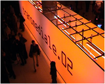

|  |
The effect sets in, when the initial and userrelated content shifts more and more to topics which don't belong nescessarily to the user. Each generation of a clone which is being processed and which circulates in the net builds a camouflage on the topics, one can be related to. Amazingly the peoples using Tracenoizer showed a big interest or big antipathy to the Service. Some were fascinated by being directly confrontated with what kind of personal datas exist on the net, and some were shocked or felt attacked from a dubious organisation which abuses them personality and privacy. Finally Tracenoizer is a public service with the serious attempt to help saving peoples privacy. |